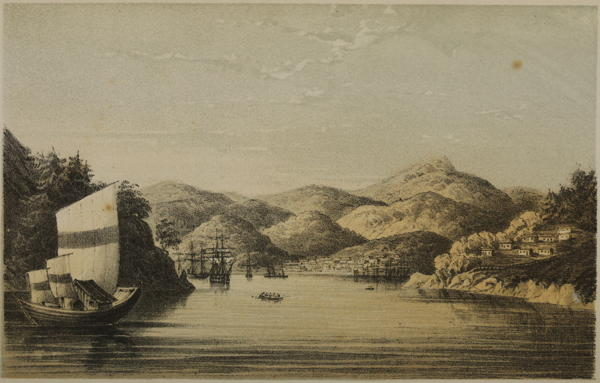

“Nagasaki”
Narrative of the Earl of Elgin’s Mission to China and Japan (1859)
It must be admitted by all who have had the good fortune to visit Nangasaki, that it is one of the most beautiful places in the world. The harbor is surrounded on all sides with hills and valleys, all beautifully filled with forest trees, and shrubbery of all kinds, of the richest varieties. Here and there are neat farm-houses built in the peculiar Japanese style, with well-cultivated farms, and some of the rarest and most charming birds of song sending forth their sweet notes. Every thing is delightful to the visitor. The town is laid out with wide streets, which are all gravelled, and neatly rolled. The buildings, which are generally not more than two stories, are mostly built of wood, and are divided into separate apartments by sliding screens, which are made out of wood and fine white paper. In each of these dwellings, the floor parts are covered over with a very heavy thick matting, at least an inch thick, and are kept very neat. At the entrance of all houses and shops, there is a small space or platform left uncovered, where all who enter the same leave their shoes. You could not offer a greater insult to them than to enter their houses with your shoes on. In one room there is always a square space built of tile. In this, a charcoal fire is constantly kept burning: over this, suspended from the ceiling by means of a wire and hook, is the tea-kettle, so that hot water is at all times at hand; and, as the Japanese are great tea-drinkers, the beverage is readily prepared. They are great smokers, generally smoking a small brass pipe,—holding about a half teaspoonfull of tobacco, of their own raising,—with a stem from one to two feet in length. The temples in the place, which are very numerous, are very extensive buildings, elegantly ornamented with gildings, gold, and silver, with numerous idols in them. They are open all the time; and enter one of them at any hour, and your eyes would be sure to fall on some ignorant heathen, upon his bended knees, offering up his devotions to the wooden gods. They perform them in the most humble manner, bowing so low to the idols that they strike the floor of the temple with their foreheads. Their devotions over, they rise and proceed to a box, used for the purpose, and drop in a few pieces of cash, and leave,—no doubt fully satisfied, that, as far as the soul is concerned, they are safe. On the side of the hill, at the right of the town, they have a very handsome burial-ground, surrounded on all sides with trees, &c. Within this home of the dead, I saw some of the handsomest monuments and gravestones that I have ever seen in any part of the world. The bazaars are well filled with the rich laquered ware, and other fine mechanical works, the production of this people.
]A Cruise in the U.S. Steam Frigate Mississippi (1860)
The houses of the Dutch officials in Decima are unpretending little abodes, generally constructed of wood, with verandahs seaward; the lower story devoted to warehouse purposes, the upper containing three or four small simply-furnished rooms. Up to quite a recent period Decima must have presented rather the aspect of a penal settlement than the abode of a community of merchants. So strict was the surveillance to which the members composing the Factory here were subjected—so severe the restrictions by which they were bound—that one is tempted to believe that the gentlemen who chose the Dutch Factory at Nagasaki as their habitation, must have been the victims of that species of misanthropy which is supposed, in our own country, to induce men to apply for situations in lighthouses.
Narrative of the Earl of Elgin’s Mission to China and Japan (1859)
Returning on board the Furious with our report of Decima and its inmates, we landed again in the afternoon to explore the town of Nagasaki. As we neared the crowd of boats moored at the stone steps of the wharf, I experienced that feeling of pleasurable excitement, the keen edge of which becomes so blunted by the very necessity of the traveller’s vocation, that he often despairs of ever again experiencing those delightful sensations incidental to strange and novel scenes which first lured him away from his fireside. Up to this moment, the town itself had been only partially visible, for a sort of embankment runs along the shore at a distance of a few yards from the sea, and in the hollow behind it are situated the principal streets. There was no great crowd collected to watch our landing—foreigners were becoming a daily sight—and we were allowed to follow our inclinations in our choice of a line of exploration.
A flight of steps ascends the embankment, at the top of which is situated one of the official residences of the Governor. This embankment, which is in fact a sort of raised parterre, is of considerable width, and a broad street runs along its whole length. Crossing this, we reach the head of the flight of steps that descend into the town, which now lies at our feet. The view is peculiarly striking, especially to the stranger who has just arrived from China. Instead of an indefinite congeries of houses built apparently on no settled plan, and so close together that the streets which divide them are completely concealed, we saw before us a wide spacious street, about a mile in length, flanked by neat houses, generally of two stories, with tiled or wooden roofs, and broad eaves projecting over the lower story. A pavé ran down the centre of the street, on each side of which it was carefully gravelled to the gutters. No wheeled vehicle or beast of burden was however visible, but, in default, a plentiful sprinkling of foot passengers gave it an air of life and animation. It terminated in the distance in a flight of steps, which soon disappeared amid the foliage of the hill-side, crowned with a temple or tea-house, or gleaming with the white-washed walls of some fire-proof store house.
As we traversed its entire length no foul odours assailed our nostrils, or hideous cutaneous objects offended our eyesight; nor did inconvenient walls or envious shutters debar us from inspecting, as we passed along, the internal economy of the shops and dwellings on each side. Light wooden screens, neatly papered, and running on slides, are for the most part pushed back in the daytime, and the passer looks through the house, to where the waving shrubs of a cool-looking back-garden invite him to extend his investigations. Between the observer and this retreat there are probably one or two rooms, raised about two feet from the ground; and upon the scrupulously clean and well-wadded matting, which is stretched upon the wooden floor, semi-nude men and women loll and lounge, and their altogether nude progeny crawl and feast themselves luxuriously at ever-present fountains. The women seldom wear anything above their waists, the men only a scanty loin-cloth. In the mid day, during the summer, a general air of languor pervades the community: about sunset the world begins to wash, and the Japanese youth, like copper-coloured Cupids, riot tumultuously.
Narrative of the Earl of Elgin’s Mission to China and Japan (1859)
Since the opening of the port of Nagasaki to other nations besides the Chinese and Dutch, its trade has been greatly enlarged. The harbour is now gay with the ships of all nations, and a brisk trade has sprung up between Japan and China—a trade which the quiet old Dutchmen never seemed to have dreamed of. Large quantities of seaweed, salt fish, and sundry other articles are exported to China; while the Chinese import medicine of various kinds, Sapan wood, and many other kinds of dyes. The exports to Europe are chiefly tea, vegetable wax (the produce of the Rhus already noticed), and copper, which is found in large quantities in the Japanese islands. At present there is little demand for our English manufactures, but that may spring up in time. Although Nagasaki may never become a place of very great importance as regards trade, it will no doubt prove one of the most healthy stations in the East; and may one day become most valuable as a sanatarium for our troops in that quarter of the globe.
Yedo and Peking (1863)
The charm of Nagasaki lies in its unsurpassed environs, in its really beautiful situation on the blue bay, that is spreading out before the eye like a large and picturesque inland lake, affording a beautiful panorama. The streets run along the harbour in terraces, climb up on both sides to the hills and mountain ranges, which form here and there charming little valleys, and rise at the bay’s end in the Campira mountain to a height of 1,500 feet. All round the vegetation is in full display. Persimmon, wax and camphor-trees, camellia and gardenia are here at home, together with ivy, thistle, willow, and fir-trees. Alongside the beech and oak we see the pinnated bamboo and the palm tree, and all these representatives of the tropical and the temperate zone grow and bloom alike in beauty and abundance. All ideas of a geographical division of the flora over the earth seem to be lost here. It is chiefly this strange and peculiar mixture of products of the tropical and temperate zone which makes such a great impression on the foreigner, an impression which he will not easily forget and which leaves admiration and surprise in his mind.
Japan As I Saw It (1912)
◀ Mt. FujiNara ▶